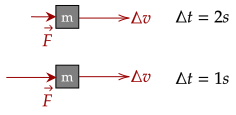

When we apply a force on something, we cause an acceleration, which changes its velocity.
One thing we haven't noted is that we can vary the amount of time we apply force. A small force can do what a large force can do if we apply it for a long enough time.

For example, when we want to stop a car we are in, we can either apply a large amount of force over a short amount of time, or a small amount of force over a long amount of time. Both will lead to the same effect.
This definition of impulse shows us that force and the duration of when it is applied is interconnected in how the velocity changes; while a force causes acceleration, the acceleration needs time to change the velocity.
However, one thing we need to note is that force doesn't need to be constant over that period of time. We saw this before with time-dependent forces. For example, we can push a box for a long time, but we will slowly start to weaken our push.

To remedy this, we can use the average force instead. Because the average force over a period of time is constant, the acceleration is constant as well.
We can use the original equation we had for the average acceleration; which is the change in velocity over a period of time, which here is the duration of the force.
This gives us a relation between the average force, the duration of contact, and the change in velocity. We can equate the impulse to these two quantities, as shown below.
What are the units of impulse? We need only look at the second equation, which is mass times velocity, which is . We will use the first equation's units however, which is the , or the Newton second.
Question 1
(HRK Q6.6) Can the impulse of a force be zero, even if the force is not zero? Explain why or why not.
Solution
The impulse of a force can be zero. To see this, we equate both the equations for impulse, and see what needs to happen.
Now, since we are given that the force is not zero, and the mass certainly can't be zero, it implies that either the duration of the force Δt or the change in velocity Δv is zero. However, they both can't be zero either.
The duration can't be zero, since that would imply that the force never happened.
However, the change in velocity can be zero. For example, in an object revolving around a circle, as it goes through one revolution, the centripetal force is nonzero; however, the velocity at the start and the end is the same; its change is zero.
Question 2
(HRK Q6.4) Explain how an airbag in an automobile may help to protect a passenger from serious injury in case of a collision.
Solution
An airbag helps protect a passenger by increasing the time of contact, thereby increasing Δt. To balance out this increase of Δt, the average force must lower, which means there is a less amount of force that will be applied to the person.
Usually, it isn't useful to get the impulse directly. Instead, we use the fact that we have two equations for the impulse to solve problems.
The above equation is quite powerful, as it can help us deal with some problems with collisions.
Exercise 1
An object has a constant force being applied to it over a certain time, causing a change in its velocity. What is the effect on the strength of the force in the following situations, given the impulse is kept constant across all situations:
(a) Δt is tripled
(a) Δv is halved
(c) Δv is doubled, and Δt is halved
Solution
We first rearrange the equation to get force all on one side.
We can see that if we increase the time, the force decreases; it has an inverse relationship. If we increase the change in velocity, the force increases; it has a direct relationship.
Thus for the following problems, we have the following.
- If Δt is tripled, the force is cut in three (1/3x)
- If Δv is halved, force is also cut in half (1/2x).
- If Δv is doubled and Δt is halved, it is overall quadrupled (4x), as it is doubled twice.
Exercise 2
(HRK E6.4) The bumper of a new car is being tested. The 2300-kg vehicle, moving at 15 m/s, is allowed to collide with a bridge abutment, being brought to rest in a time of 0.54 s. Find the average force that acted on the car during impact.
Solution
Noting that the car goes from 15m/s to rest, we have the change in velocity, which is 15m/s. Thus, we have enough information. Rearranging, we have the following force.
Exercise 3
(HRK E6.8) A force that averages 984 N is applied to a 420-g steel ball moving at 13.8 m/s by a collision lasting 27.0 ms. If the force is in a direction opposite to the initial velocity of the ball, find the final speed of the ball.
Solution
Noting that 27.0ms is 0.027s, it seems we have enough. However, we need to find the final speed instead. To do this, we break the change in velocity to what we used before, which is that its the final velocity minus the initial velocity.
We now solve for the final velocity.
Now, since the force is in the opposite direction of the velocity of the ball, we set it as negative. We then substitute.
This is great, however we need the speed. Thus, we just take the magnitude of the velocity, so the speed is 49.5m/s.